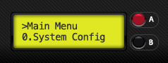

In this section, you can set common parameters of the system.
| Parameter | Values | Function |
|---|---|---|
| Device Type |
|
Define what type of device is connected to the DEVICE port connector. If the device is “Electrovalve”, you will see the “Drops config” option into the “Sensor trigger” mode. If device is “Laser”, the system will turn off the laser before the photo is taken after the laser barrier is crossed. |
| Sensor tunning |
|
Define how the tunning of sensor limit works. The selected mode will be used in “Sensor trigger” mode when adjust the sensor limit. |
| Shutterlag time |
|
Shutterlag time used in all run modes expressed in milliseconds. This time depends of the camera model. See the shutterlag reference. |
| Mirror timeout |
|
Timeout expressed in milliseconds until the mirror is lockdown by the camera when using the “Mirror lock-up” mode in the “Sensor trigger” mode |
| Use Flash1 |
|
Define if “Flash1″ is used or not. If “YES”, some options will appear in the “Intervalometer” and “Sensor trigger” menus related to this flash. |
| Use Flash2 |
|
Define if “Flash2″ is used or not. If “YES”, some options will appear in the “Intervalometer” and “Sensor trigger” menus related to this flash. |
| Speaker |
|
Determines if the system beeps or not. If beeps is activated, the system will beep every time you enter o exit a section of navigation menus, when you change a setting that is logical value and when you are adjusting a sensor limit to indicate that reading is exceeding the limit value selected. |
| Backlight |
|
Will turn ON/OFF the LCD backlight. |